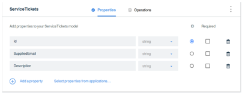
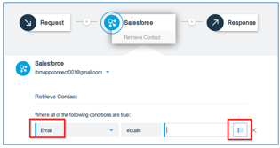

Integration Scenario 2 – Create an API using flows
Overview

Kirk is responsible for keeping track of Paradise Audiophiles dealer network and registered customer base in their CRM system, sitting within a team of business analysts. Since the merger with Big Blue Tweeters they have reconciled their dealer information into Salesforce. He is working on a project with a business partner to build a mobile app for their dealers to register service requests, and they need an API. Kirk has done some coding before, but he isn’t a developer.
Log into IBM App Connect
-
Launch the Chrome browser.
-
In your browser, go to https://designer.appconnect.ibmcloud.com/ and sign in with the ibmappconnect0XX@gmail.com account you have been given.

Connect IBM App Connect to Salesforce
As Kirk, you know you want to build his API to create and retrieve “Case” objects in Paradise Audiophiles Salesforce CMR - because that’s what is used to track service tickets today. So you look and see if App Connect can connect to your Salesforce system.
- Using IBM App Connect in your browser, if there are any flows on the dashboard written by a previous attendee, then you may stop and delete them if you wish.
-
Open the Applications tab and start typing “salesforce” …
-
If your App Connect account is not already connected to Salesforce you will see this indicated and you should click the Connect to Salesforce button:
-
Click continue at this dialog:
-
You will be taken through some dialogs to authenticate and grant access to App Connect:
Note: You might need to log into https://gmail.com with the supplied details to obtain a verification code during the sign-in process.
Define your API
-
Return to the dashboard and click New->Flow for an API to create an API:
-
We want an API for managing Service Tickets. Type “Service Tickets API” as the title of the API as shown below, and name the model for the resource “ServiceTickets” being careful to ensure that it is capitalised as shown and there is no space between ‘Service’ and ‘Tickets’.
Then click Create model.
-
Now we need to create some properties on our ServiceTickets model. We know we are going to be updating a “Case” in Salesforce, so we will copy some of the properties of a ‘Case’ in salesforce into our model. Click on ‘Select properties from applications’:
-
Expand Salesforce:
-
Then scroll down to ‘Case and expand it to see the properties of a ‘Case’ in salesforce:
-
Choose the “Id”, “SuppliedEMail” and “Description” properties and click “Add Properties”. This will copy the selected properties into the Model for your API. You will be returned back to this screen with the properties you selected now filled in:
 -
Now we add “MPN” as an additional field into the model, because we always use that terminology for the part number with our dealers (regardless of how it’s referred to in our CRM), and so that’s what the mobile developers will expect:
Note: Take care not to use spaces, to leave the “Required” checkbox unchecked on all fields, and mark the “ID” checkbox next to the field called “Id”
Implement the Create Operation
We now need to build the logic that connects this model to Salesforce.
-
Click on the Operations tab, and click the drop-down to add the “Create ServiceTickets” operation:
-
Click the button to start implementing the flow:
-
This will open the flow editor, and show you what a sample request will look like to your new API when it’s made by an app:
Retrieve the contact from Salesforce
The mobile app is going to supply us just an e-mail address, but we need the full customer details to be able to create the ticket. So the first thing our flow needs to do is to retrieve the Contact from Salesforce.
-
Click the “+” button to add an action to the flow:

-
Scroll down to Salesforce and further scroll down and select the “Retrieve Contact” action:
-
Choose “EMail” as the left side of the lookup condition, and click the icon on the right to display a list of references that are available in the context at this point in the flow:
Note: We apologize if you see a lot of entries in the drop-down menu, including non-English language items and if these are not sorted alphabetically. This is a known issue at the time of writing this Lab, and will be addressed shortly. -
Choose “SuppliedEmail” from the inbound request:
-
The configure the flow to only process the first matching Contact:
-
You now have a fully configured retrieve operation that will look for exactly one Contact in Salesforce that matches that e-mail address that will be included in the Request parameters when the API is invoked. If zero or more-than-one are found, then the flow will report an error when it runs.
Lookup the product by MPN
We also want the find the full details of the product from the MPN field that was passed in on the API call.
-
Click on the ‘+’ to the right of the salesforce Retrieve Contact node and add a Salesforce “Retrieve Product” operation to your flow. Then configure it as below:
-
Now configure the flow to only process the first matching Product:

Create the Case in Salesforce
Now we want to create the actual Case in Salesforce, using all the details we have retrieved.
-
Click on the ‘+’ to the right of the Retrieve Product node to add another node and add a “Create Case” Salesforce action to the flow after Retrieve Product:
-
Configure the following fields in the Case, where “Web” is typed in as a literal value, and the other fields are filled in from references in the context. Note that if you begin typing then matching values will be displayed for you to select from.
- Some of the fields come from the incoming API request – “SuppliedEMail”, “MPN” and “Description”
- Others come from the Salesforce Contact you retrieved – “Contact ID” and “Company”.
- In “Description” you combine the “Product Name” you looked up in the Salesforce “Product” with the incoming “Description” from the API request.
You will notice some field mappings have a warning associated with them, like:
These are arrays. Click on the “How can I…?” link and see the suggestions:
For this lab example solution, indicate that you will single the first instance:
The mapped fields should be:
Return the ID of the new Service Ticket
We want the API to return an identifier that the app can use as a reference to retrieve this ticket later. We will use the Salesforce Case ID directly for this.
-
Click on the Response action in the flow, and fill in the reply mapping for “Id” to “Case ID” from the Salesforce Create Case action (there is no need to fill in the other fields). Note that the simplest way to do this is to type ‘case’ and select Case Id as shown below.
-
Click on the source field to set the mapping:
Switch on your API
Now we have the first operation on our API – to create ServiceTickets by retrieving Contacts and Products from Salesforce, and create Cases. So let’s give it a try.
-
Click “Done” to exit the flow editor:
-
Click on the menu in the top-right and select “Start API”:
Note: If the “Start API” option is greyed out, click back into Operations -> Edit Flow to re-enter the flow editor. Then click on each Action in turn, letting the page load and then check there are no missing details. Then click “Done” and try to start the API again. There is a known issue at the time of writing. This issue is to be addressed shortly. -
Return to the dashboard; the flow API is running:
Create a Contact and Product in Salesforce to test
So that we can try out our API, we will create some objects in Salesforce.
- Log into Salesforce at https://login.salesforce.com
-
Click to create a new Contact:
-
Make sure to fill in the “Name”, “Last Name” and “Email” with some suitably unique values:
-
Open the App Launcher:
-
Select “Products”
- Create a new Product with a suitably unique “Name“, and “Product Code”:
Test your new API operation
Now we want to test our API and see what it can do.
- Using your Chrome browser, start the Postman plugin tool using the App Launcher:
-
Before we can test our API, do that we need to know the details of how our API has been exposed by App Connect. From the dashboard, open the API:
-
Then click Manage:
-
This shows the URL and credentials for the API. Leave the browser open as you will use the Copy to clipboard link in a minute:
- Go to the Postman tool launched from the Chrome browser. Click the Authorization tab, and then:
- Set the verb to POST.
- Set the URL to the API of the URL. To this you must append the resource name of ServiceTickets.
- Set the authorization type to Basic Auth, and then set the credentials of user and password.
- Still from within Postman, then click the Body tab, and then:
- Click raw.
- Set type as JSON.
- Enter the JSON request in the body pane. You may copy and paste from the code snippet shown below replacing the samples with the data you entered in Salesforce.
- Press Send.
{ "Description": "sample_description", "Id": "sample_id", "SuppliedEmail": "sample_suppliedemail", "MPN": "sample_MPN" } - You should see a successful HTTP response code of 201 and a JSON response returned.
Examine the new Case in Salesforce
If you navigate back to https://login.salesforce.com in your browser, and look at Cases. If they are not on the header bar, can find them via the “App Launcher” you used to find “Products” in Salesforce.
Thank You!
In this Lab you’ve seen how IBM App Connect lets you build flows driven by events and flows that implement an API. You have seen how the APIs are defined so that they conform to the conventions modern developers expect, and that you can build flows quickly via rich graphical tooling with multiple operations and logic.

Want to learn more?
If you didn’t complete the lab exercises or want to go further, then why not sign up for a free trial? Go to https://designer.appconnect.ibmcloud.com/newAccount and complete the registration.
Do you want to keep up to date or influence the product?
IBM App Connect is a rapidly evolving service in IBM Cloud. If you have been interested by what you’ve explored in the product today, then please sign up to our sponsored user program. The program provides the opportunity for you to influence how we extend and enhance the product to meet the needs of our customers.